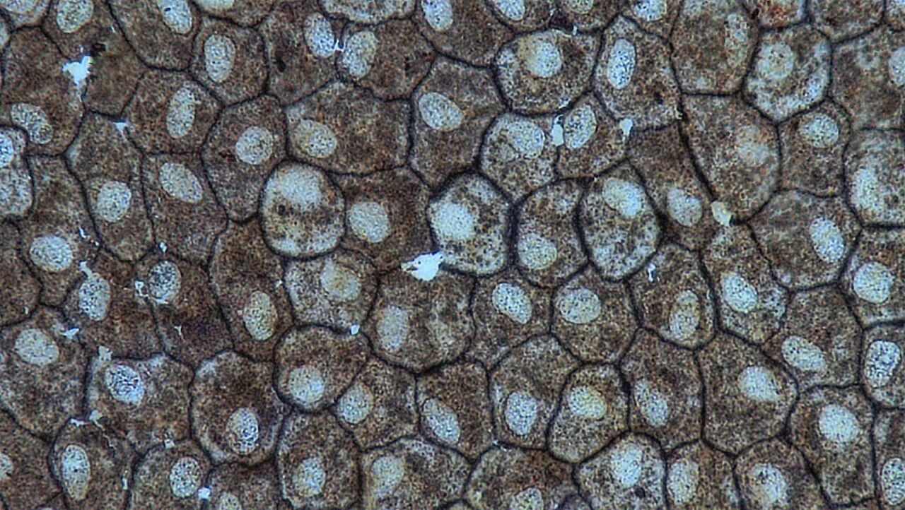

Epitélio pavimentoso simples, 400× — Berkshire Community College Bioscience Image Library, CC0; Wikimedia Commons.
Tecido epitelial
Suas células ficam muito próximas, com pouca matriz extracelular entre elas. Forma revestimentos e glândulas.
Função
Proteção, absorção e secreção.
Onde encontrar
Epiderme, revestimento do intestino e glândulas.